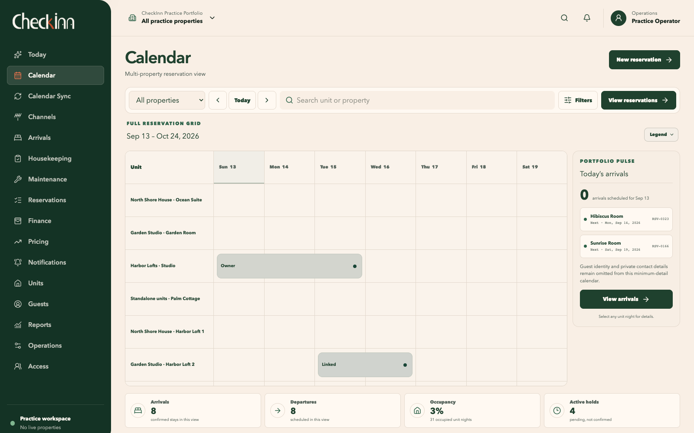
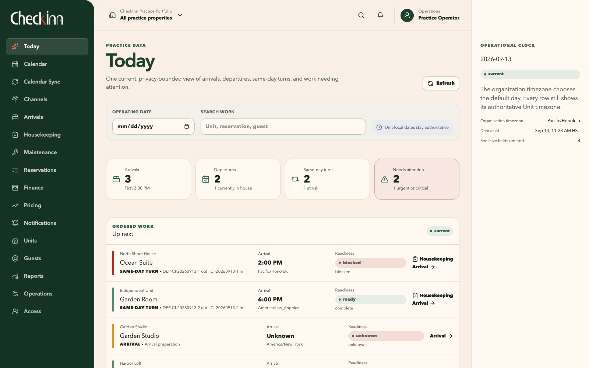
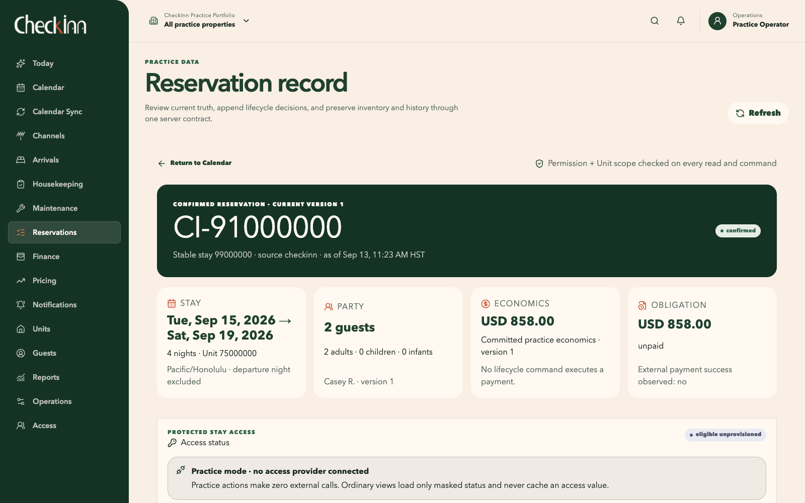
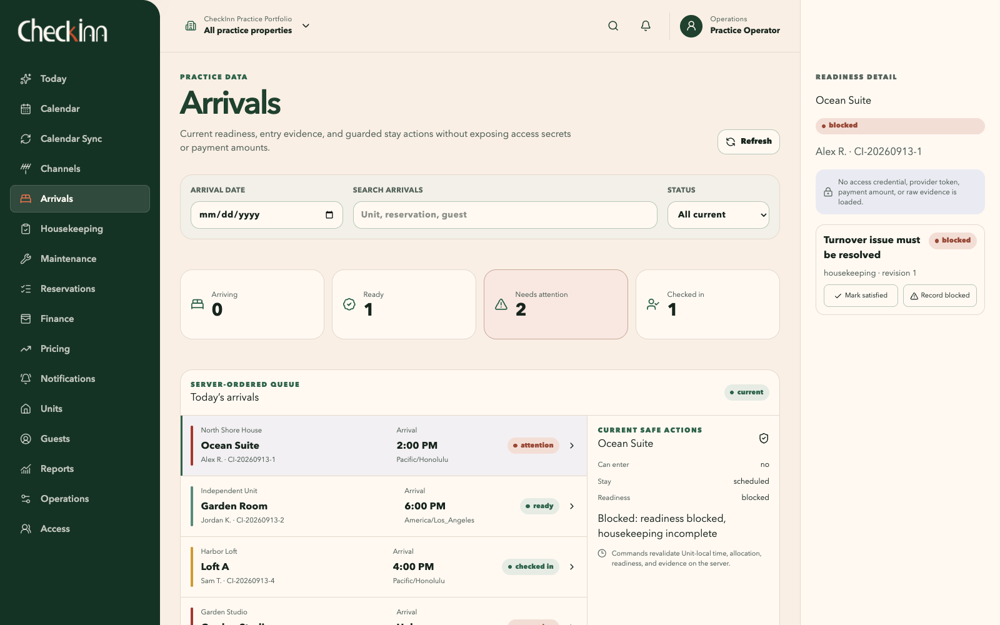
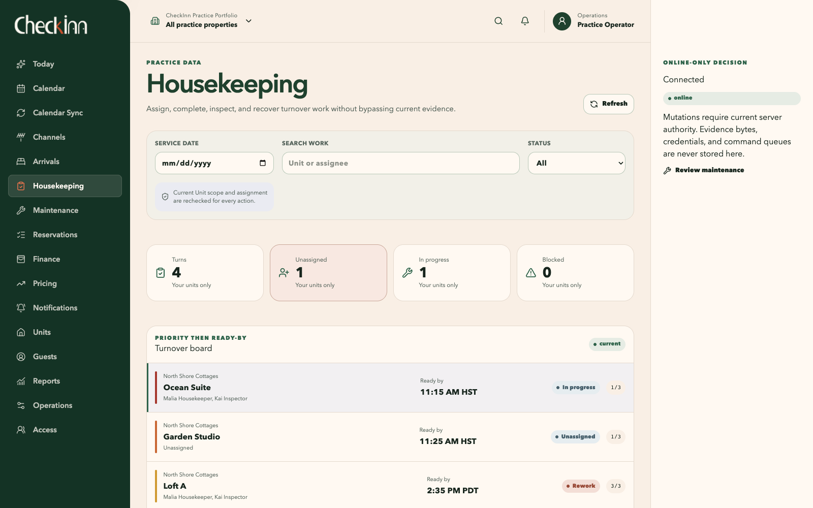
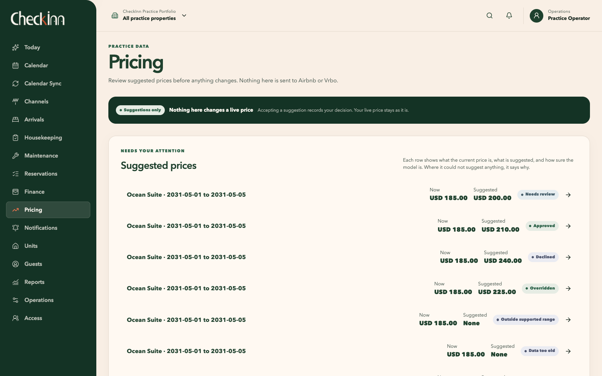
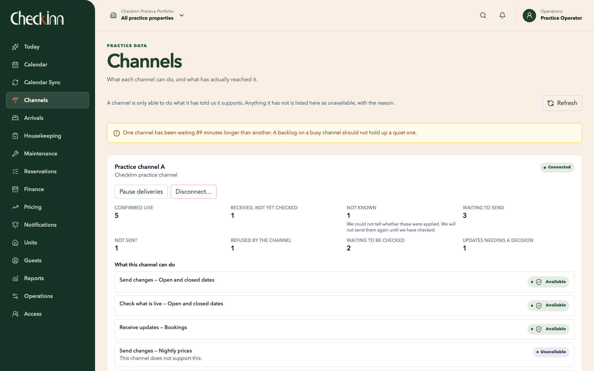

The whole operating day
Today brings arrivals, departures, same-day turns, and outstanding work together. Each property retains its local dates and time zone, so the portfolio view keeps the timing meaningful.
Before the door opens.
CheckInn is a reservation and property operations system for independent owners and small teams. It brings available nights, guest details, agreed prices, and the work of preparing a home into one place. I’m building it around the handoffs that make a stay possible, from the first booking to the next arrival.

A guest leaves in the morning and another arrives that afternoon. Between those two events, the home needs to be cleaned, inspected, and ready to use. Someone may also need to follow up on a repair or confirm an arrival requirement. Each person sees a different part of the same day.
My work in vacation rentals has made that coordination familiar. Dates are important, but so are the things those dates ask people to do. A calendar can show a stay clearly while leaving the team to work out the rest somewhere else.
CheckInn connects the reservation to the home, its guest party, and the work around arrival and departure. Each workspace presents the part relevant to its user, so someone planning the week and someone preparing a home can work from the same underlying records.
The question behind CheckInnCan the next person see what is ready, what is still needed, and where their part of the work begins?
Today brings arrivals, departures, same-day turns, and outstanding work together. Each property retains its local dates and time zone, so the portfolio view keeps the timing meaningful.
The calendar retains the selected unit and dates while the operator filters the view or opens a profile. Returning to the broader view preserves their place.
A confirmed stay, a temporary hold, an owner block, and a maintenance block mean different things. Labels and icons accompany color so those distinctions remain readable.
The basic unit of availability is one property unit for one night. A hold temporarily reserves those nights while an operator records the guest party and reviews a quote. Confirmation connects that inventory and the accepted terms to a lasting reservation record. The stay then gives the team a shared frame for preparation, arrival, and departure.
The server controls the hold’s lifetime. Confirmation converts the existing inventory claim without releasing the nights between steps. An expired hold requires availability to be checked again.
Acceptance records a specific version of the nights, charges, taxes, discounts, and terms. Changing the stay or party requires a new quote and acceptance.
The reservation, accepted prices, amount due, inventory claim, and command receipt commit together. The amount due records an obligation; collecting a payment is a separate operation.
The calendar supports planning across properties. On a phone, it becomes a list of units and dates suited to a smaller screen. Each workspace follows the same principle: preserve the shared information and present the details needed for the task at hand.
Arrivals, departures, same-day turns, and an ordered queue of work needing attention.
Available, reserved, held, and blocked nights, with the source and details behind each entry.
The guest party, accepted terms, charges, and a history of changes to the stay.
Guest and party records, with access limited by the operator’s permissions and assigned units.
Readiness for each stay, the requirements still outstanding, and the actions currently available.
Cleaner assignments, deadlines, checklists, inspection results, and any rework before completion.
Maintenance and other property work, including repairs that affect whether a home is ready for arrival.
These screens follow the work from the daily overview to the next property turn. They were captured from the running development application using synthetic practice data. Select a screenshot to inspect it at full size.
Today brings arrivals, departures, same-day turns, and readiness into one view. The work queue orders items by urgency and timing, with a direct route to the relevant stay or task.

The reservation record brings the dates, guest party, charges, amount due, and access status together. A change is previewed before it is committed, and previous versions remain in the history. Cancelling a stay records its effect on inventory and amounts due; any refund requires separate payment processing.

The arrival queue pairs each stay with its readiness. Selecting a stay reveals the outstanding requirements and available actions. In this example, housekeeping still needs attention before the guest can be checked in.

The turnover board connects cleaner assignments, ready-by times, and checklist progress. Cleaning, inspection, rework, and completion remain distinct stages. When an inspection fails, the cleaner resolves the rework and the home is inspected again.

Pricing runs in shadow mode: it produces a recommendation or records why it cannot support one, without publishing a rate. The decision retains its input snapshot and model version so it can be reproduced. The current model uses a simple calculation to exercise this review process; pricing quality still needs evaluation.

A calendar feed can establish that a night is unavailable without supplying the guest, price, or reason. CheckInn records what the source actually provides. The imported block stays labeled with its origin and freshness, so an operator can see how much the connection establishes.
An operator can create a local stay with a temporary hold, guest party, accepted quote, and confirmation. Changes and cancellations preserve earlier versions and the reasons for the change.
Calendar import and export are implemented with controlled test feeds. Imported events create labeled inventory blocks. Reconciliation handles changed or removed events while retaining their source history.
The development branch includes provider adapters and a channel administration view exercised against simulated services. Live Airbnb, Vrbo, and other provider connections still depend on access, integration, and provider validation.
External connection model. Direct reservations work locally; the provider and external-service connections shown here remain planned live integrations.

I separate the operator’s view of a stay from the checks that authorize a change. The interface explains the action; the API and database validate the current records before committing it. That distinction matters when two people act at once, information changes after a preview, or a response is lost.
Next.js and React provide the interface; NestJS on Fastify handles the API. TypeScript and a client generated from OpenAPI carry the request and response definitions between them. Shared components give status, selection, and recovery a consistent presentation.
A PostgreSQL exclusion constraint rejects overlapping active claims for the same unit’s inventory. It covers competing writes as they reach the database. Stay dates include arrival and exclude departure, allowing a departure and the next arrival to share a date.
Moving or cancelling a reservation rechecks permissions, record versions, inventory, and the exact preview. An accepted change appends a new version and updates the inventory in one transaction. Earlier versions preserve what was agreed and how it changed.
CheckInn confirms a local booking independently of HAVEN and queues immutable accounting facts separately. If delivery is uncertain, the adapter reads back the destination’s records. A resend requires complete evidence of absence and recorded operator authorization. This workflow is implemented against a simulated destination; live HAVEN integration remains ahead.
A vacant home may still need cleaning or a repair. CheckInn derives readiness from the stay’s required checks: housekeeping, inspection, operational blockers, and applicable payment, agreement, and access conditions. The check-in command rechecks those records before accepting the arrival. Missing or outdated information remains visible and blocks the action until resolved.
When inspection is required, an assigned inspector separate from the cleaner must record a passing result. Required checklist items, evidence, and rework also have to be resolved before the turn is complete.
Open safety work and maintenance blockers contribute to readiness. Completing one repair removes only its own contribution; other outstanding requirements continue to hold up check-in.
Stale, unknown, or disconnected views identify what needs refreshing and disable consequential actions. The operational workflows require an online check of the current records before a change can be recorded.
A command receipt records the result of an action. If the response is lost, the client checks that receipt. Retrying the same command with the same key returns the original result without performing the action twice.
The development build brings reservations, calendar availability, guest records, arrivals, housekeeping, and maintenance into connected workflows. Pricing review and external delivery are exercised with controlled inputs and simulated services. Production deployment and live provider connections remain the next stage.
The experience I’m working toward is quite ordinary: someone can look at the day, understand their part in it, and get on with the work. Each reservation belongs to a home, and each home has people looking after it. CheckInn needs to keep those relationships understandable as the day changes around them.